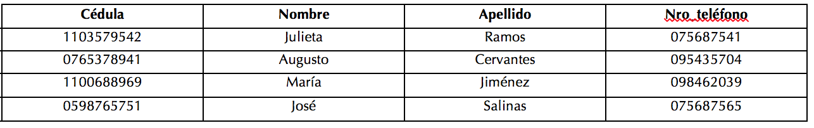
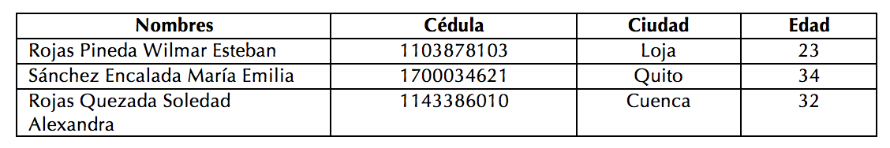
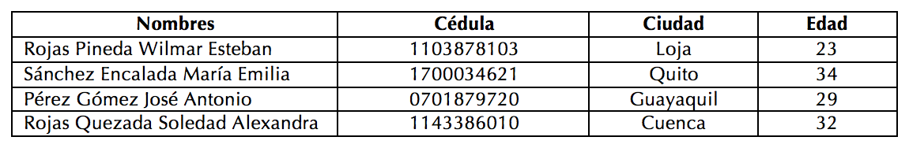

Almacenar, organizar, recuperar, administrar información de manera ordenada.
Realizar una distribución de información de acuerdo a una plantilla estándar.
Guarda en un medio físico una gran cantidad de información.
Indique cuál de las siguientes afirmaciones constituye una ventaja de las bases de datos:
Con las bases de datos los riesgos de delitos informáticos son varios ya que la información está disponible a través de redes informáticas.
Gracias a los servidores y las bases de datos es posible procesar gran cantidad de información sincrónicamente desde varias terminales.
En las bases de datos se guardan también información personal, pero si no se aplica políticas de seguridad adecuadas, no se garantiza la privacidad de dicha información.
De las siguientes afirmaciones sobre las bases de datos, elija la que resulta ser falsa.
Podemos realizar consultas a las bases de datos para obtener información utilizando sentencias SQL.
A una base de datos, únicamente puede acceder un usuario a la vez.
Las bases de datos están compuestas de tablas, que son conjuntos de registros, y éstos son conjuntos de campos en los cuales se guarda información.
Indique cuál de las siguientes opciones es invaluea
Las bases de datos son de gran utilidad porque pueden almacenar grandes cantidades de información.
Una base de datos relacional, por definición contiene más de 1000 registros y campos relacionados.
El sistema de almacenamiento de contactos de celular es un programa especializado de base de datos.
De los siguientes ejemplos escoga, cuales son base de datos open source
Analice la siguiente tabla de TELEFONOS e identifique la opción de respuesta valuea:

En el tercer registro de la tabla TELEFONOS, el campo apellido corresponde a “Salinas”.
En el segundo registro de la tabla TELEFONOS, el campo nombre corresponde a “Augusto”.
En el primer registro de la tabla TELEFONOS, el campo cédula corresponde a “0765378941”..
Si tenemos inicialmente la siguiente tabla de información de estudiantes

Qué operación se ha aplicado para tener como resultado la siguiente tabla

Eliminar.
Insertar.
Ordenar.
Señale la jerarquía valuea de una base de datos:
Base de datos, campos, registros, datos, tablas.
Registros, base de datos, campos, tablas, datos.
Base de datos, tablas, registros, campos, datos.
Cuales de las siguientes Base de Datos son NO RELACIONALES:
Para las labores de manipulación de información, las personas utilizan bases de datos en lugar de sistemas basados en papel por una de las siguientes razones:
Las bases de datos facilitan la violación de sistemas informáticos que contienen grandes cantidades de información.
Las bases de datos permiten recuperar información de un modo más rápido y flexible.
Las bases de datos hacen compleja la tarea de organización al momento de enlazar sistemas..